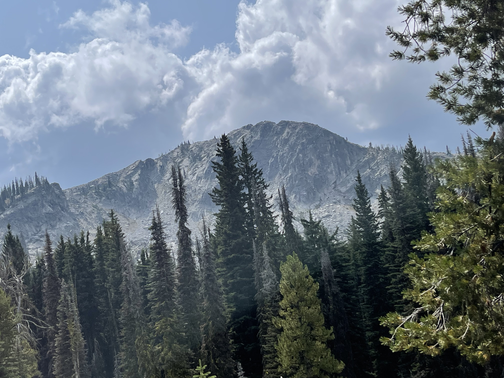
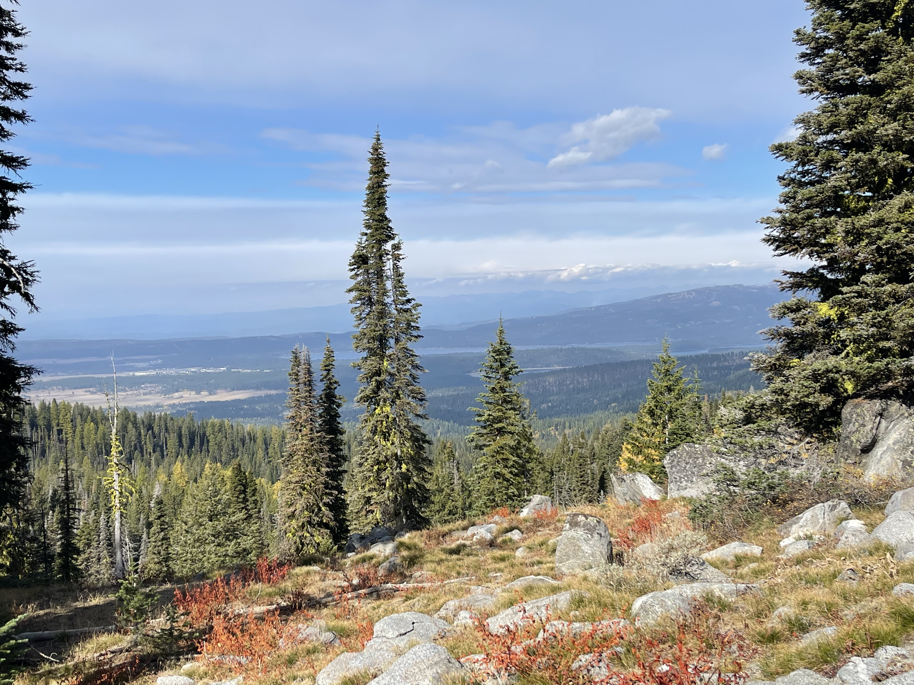

Hello, and welcome to my project
This is a practice website I've made following the Odin Project curriculum. It is a mock-up of a site advertising hiking in the central and northern regions of Idaho's backcountry.

Pictures of the North Idaho backcountry.

Whether the product of weather, logging, or animals fallen trees are a common sight. Paths can often be detected by cuts in such trees.

Sometimes the Rocky Mountains can be rocky indeed. There are many rock climbing opportunities in these areas.

Views into the backcountry are majestic and the surrounds quiet except for the sound of the wind and creaking trees. Be on the lookout for wildlife!

If you've never been into this region before you might be surprised by the amount of lakes nestled deep in the mountains.
Trips through the backcountry are difficult yet rewarding. Beautiful and yet disquieting. The isolation is amazing
and it poses great risks, but what is life without risks? Difficulty increases greatly at higher elevations but
the health benefits feel great!
-John Doe
Sign up for the newsletter!
Sign up today for free updates on the weather and best hiking opportunities! Hit that button!